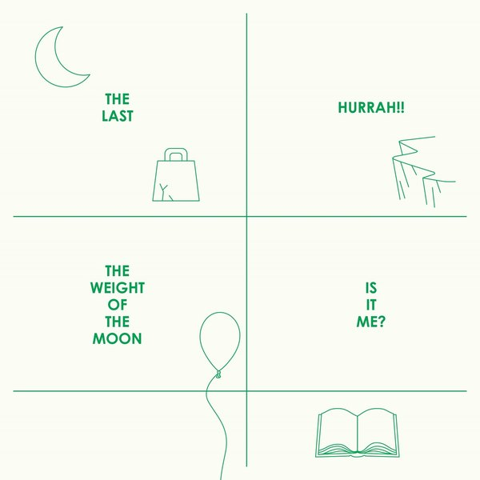
CRVI003010Kim Hiorthøy - The Last Hurrah!! — The Weight Of The Moon
2015
2015
CRVI003103Uwe Loesch - Untitled
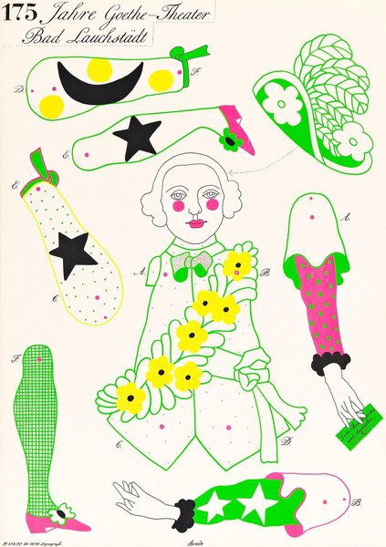
CRVI003115Helmut Brade - Untitled

CRVI002547Mathilde Flögl - A Glass Box
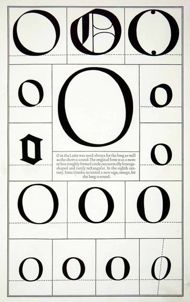
CRVI003245Frederic Goudy - Letter O
Printed plate · 1942
Printed plate · 1942
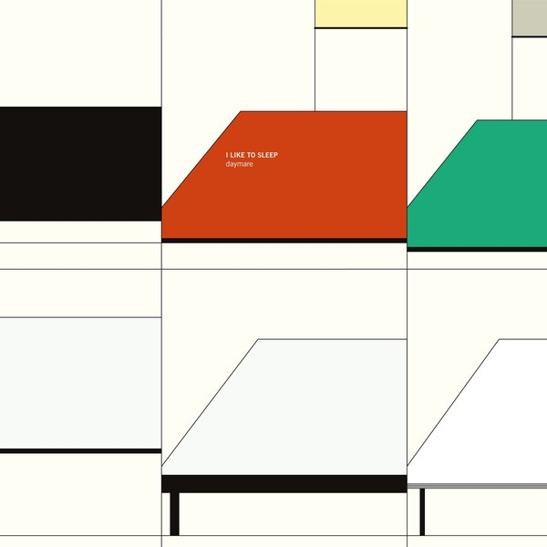
CRVI003021Kim Hiorthøy - I Like To Sleep — Daymare
2020
2020

CRVI002610Sonny Boy Williamson - The Real Folk Blues
1966
1966

CRVI002566Eddie Palmieri - Justicia
1968
1968
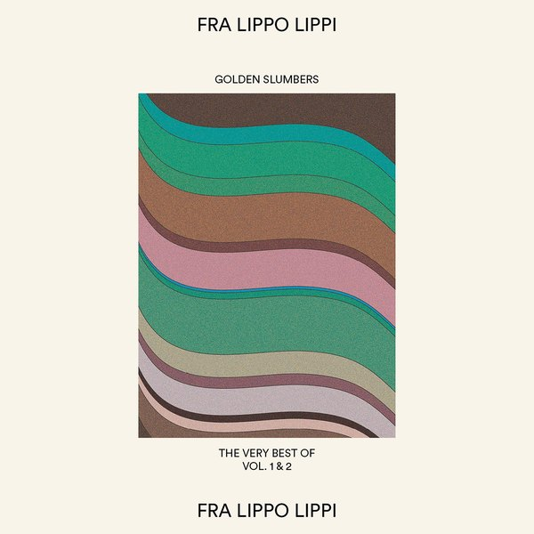
CRVI002888Kim Hiorthøy - Fra Lippo Lippi — Golden Slumbers - The Very Best Of Vol 1 & 2
2025
2025

CRVI002655Seiichi Hayashi - 10時に帰ります (I Will Return at 10 O'Clock)
1982
1982

CRVI002586Joe Cuba Sextet - My Man Speedy
1968
1968
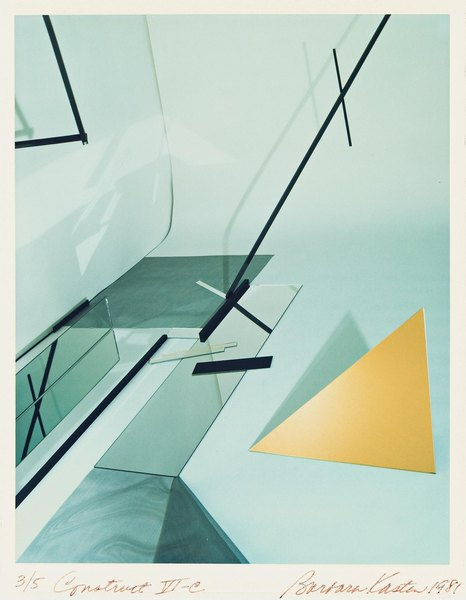
CRVI003068Barbara Kasten - Construct VI-C
1981
1981
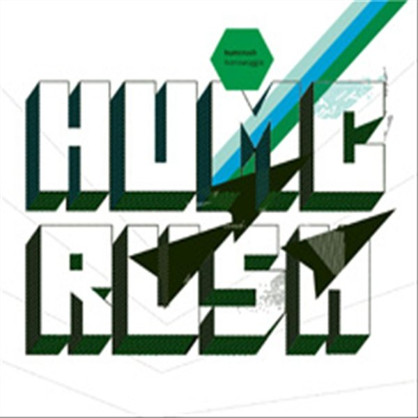
CRVI002979Kim Hiorthøy - Humcrush — Hornswoggle
2006
2006
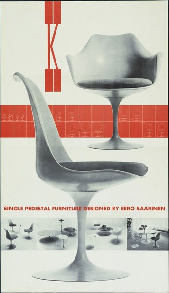
CRVI003220Eero Saarinen - Untitled

CRVI002611Sounds of Blackness - Africa to America: The Journey of the Drum
1994
1994

CRVI002772Gerd Arntz - Bank
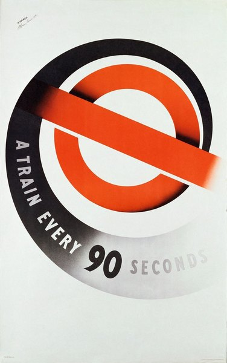
CRVI003189Abram Games - Untitled

CRVI002768William Playfair - Statistical Representation of the United States of America
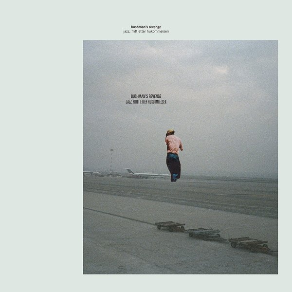
CRVI003011Kim Hiorthøy - Bushman's Revenge — Jazz, Fritt Etter Hukommelsen
2016
2016
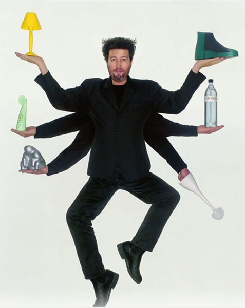
CRVI003209Philippe Starck - Untitled
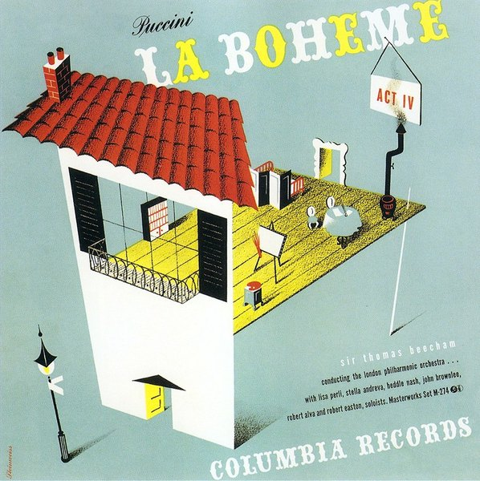
CRVI003165Alex Steinweiss - Puccini: La Bohème
Album cover · 1942
Album cover · 1942

CRVI002769William Playfair - Universal Commercial History

CRVI002755Takehisa Yumeji - Climbing Mt Fuji
1909
1909

CRVI002508Milton Glaser - Floating pear
1977
1977
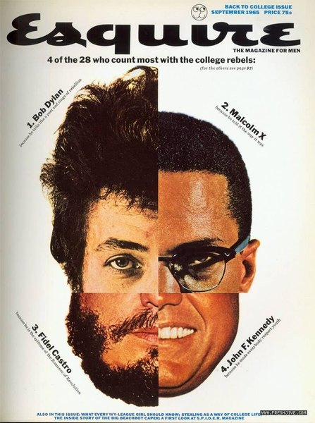
CRVI003177George Lois - Untitled Esquire cover
Magazine cover
Magazine cover

CRVI002714Shin Matsunaga - Freaks
1995
1995

CRVI002652Genpei Akasegawa - Untitled (collage with a bus and a shoreline)

CRVI002353René Magritte - The Flavour of Tears (La saveur des larmes)

CRVI002711Shin Matsunaga - Rights of Humankind
1989
1989

CRVI000413Redhead Kingpin & The F.B.I. - A Shade Of Red
Designer unknown · Virgin · 1990
Designer unknown · Virgin · 1990
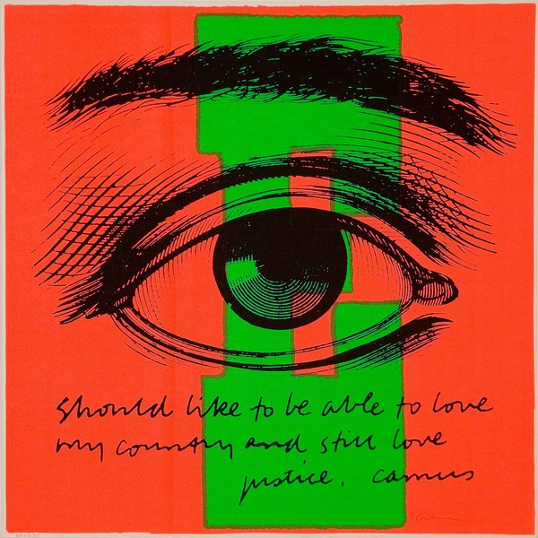
CRVI003192Corita Kent - Untitled

CRVI002852April Greiman - Workspace
1987
1987

CRVI002670Unattributed - 世界のポスター展 (World Poster Exhibition)
1982
1982

CRVI002925Corita Kent - e eye love
1968
1968

CRVI003024Kim Hiorthøy - I Like To Sleep — Sleeping Beauty
2022
2022
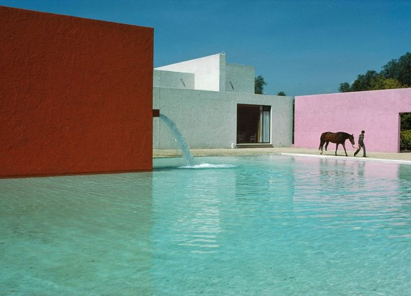
CRVI003124Luis Barragán - Untitled interior

CRVI002469Warp Records - Blech (Japanese edition)

CRVI000835Mona Chalabi - Congratulations, You’re A Parent! Here’s $1. Now Take This Quiz…
New York Magazine
New York Magazine

CRVI000848form - form 8
Internationale Revue · 1959 · 1959
Internationale Revue · 1959 · 1959

CRVI002851Unattributed - Graphis Annual 77/78
1977
1977

CRVI002478Típica 73 - Típica '73
1972
1972

CRVI000782Ivan Chermayeff - Ford Madox Ford’s The Good Soldier
Mobil Masterpiece Theatre · 1983
Mobil Masterpiece Theatre · 1983

CRVI000879Maurice Denis - L’Oratorio pour « L’Éternel Printemps »
Oil on joined paper laid down on canvas · 142 × 201 cm · 1904
Oil on joined paper laid down on canvas · 142 × 201 cm · 1904
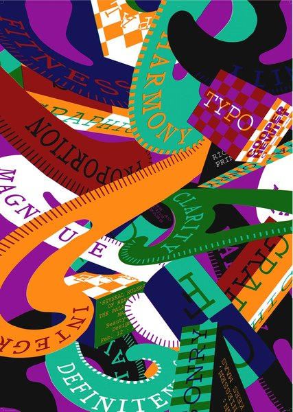
CRVI003235Richard Niessen - Seven Rulers of Beauty
Poster
Poster
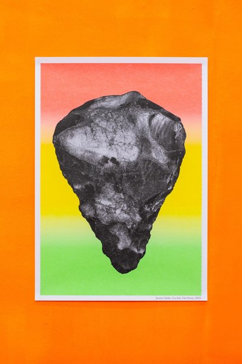
CRVI003237Jeremy Deller - Untitled

CRVI000503Unknown - The Year of the Taco
Texas Monthly, November 2020 · 2020
Texas Monthly, November 2020 · 2020

CRVI000838Ottagono - Ottagono 62
settembre 1981 · 1981
settembre 1981 · 1981

CRVI002031Dana Schutz - Sneeze
2002
2002

CRVI001801Arman - Violins

CRVI003240Max Bill - Untitled
Original lithographic poster · 1979
Original lithographic poster · 1979
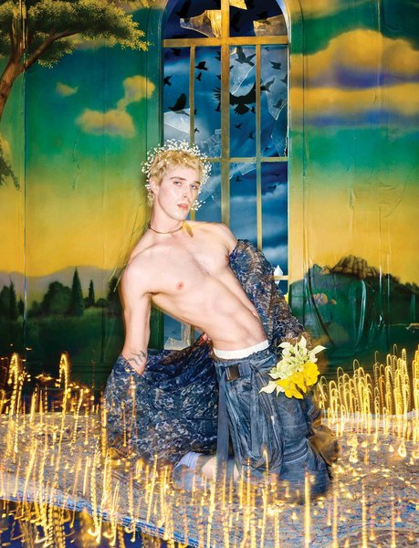
CRVI003241David LaChapelle - Untitled

CRVI003210Richard Paul Lohse - 30 vertikale systematische Farbreihen mit roten Diagonalen

CRVI002345Sonia Delaunay - Automne
1965
1965

CRVI000790Paul Rand - Golden Circle
IBM · Kauai Surf Hotel, Hawaii · 1981
IBM · Kauai Surf Hotel, Hawaii · 1981

CRVI001352Barney Bubbles - Elvis Costello — portrait poster
Designed by Barney Bubbles
Designed by Barney Bubbles

CRVI001594Tom Blackwell - Rainbow '74

CRVI002183Etel Adnan - Untitled

CRVI002861Rosmarie Tissi - Begrünungen Kuhn AG

CRVI002452Roberto Matta - Yellow and green architecture of figures
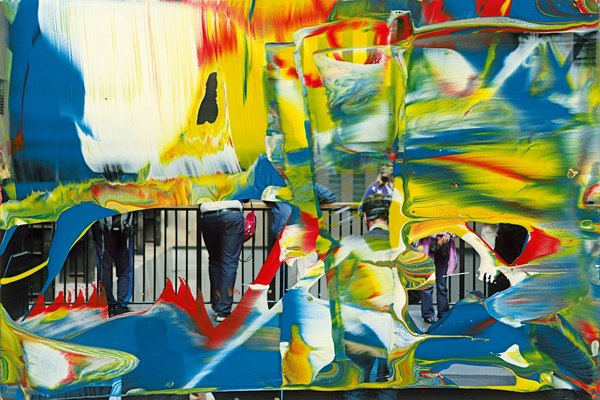
CRVI003075Gerhard Richter - Untitled

CRVI001867Dan Flavin - Untitled

CRVI001786Tsuruko Yamazaki - Untitled

CRVI000869John Provencher - The Yellow Wallpaper
A24 Zine, issue 33 · guest-edited by Kane Parsons · 2026
A24 Zine, issue 33 · guest-edited by Kane Parsons · 2026

CRVI001371Steve Lacy - Reflections: Steve Lacy Plays Thelonious Monk
Designer unrecorded · New Jazz 8206 · 1959
Designer unrecorded · New Jazz 8206 · 1959

CRVI002167Roberto Matta - Untitled

CRVI001942Unidentified - Neon Rhythm

CRVI000870John Provencher - The Yellow Wallpaper
A24 Zine, issue 33 · inside spread · 2026
A24 Zine, issue 33 · inside spread · 2026

CRVI000679Jackie Nickerson - For the Love of Lupita Nyong'o
Vanity Fair, October 2019 · 2019
Vanity Fair, October 2019 · 2019

CRVI000574Alvin Lustig - A Room with a View
E M Forster · New Directions, New Classics NC5 · 1943
E M Forster · New Directions, New Classics NC5 · 1943

CRVI002406Peter Max - Right Now
1970
1970

CRVI002691Kenji Itoh - デザイン No. 21 (Design, No. 21)
1961
1961
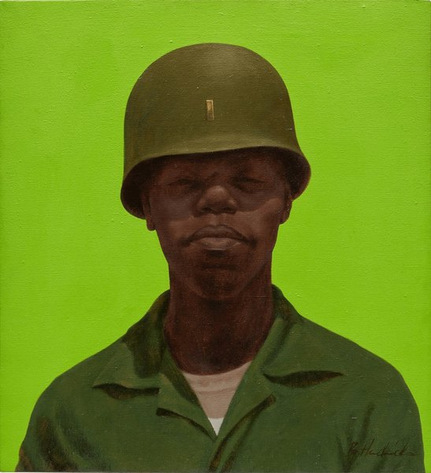
CRVI002766Barkley L. Hendricks - FTA
1968
1968

CRVI001329Mauricio Kagel - Exotica
Maker unidentified · Deutsche Grammophon
Maker unidentified · Deutsche Grammophon

CRVI002223Anni Albers - Pasture
1958
1958

CRVI000209Unknown - First Pitch
Reaction GIF · Sister Mary Jo Sobieck · 170 frames, 5.1s loop · 2018
Reaction GIF · Sister Mary Jo Sobieck · 170 frames, 5.1s loop · 2018

CRVI002169Frank Bowling - Who's Afraid of Barney Newman
1968
1968

CRVI000484Anna Devís - The Hotel Issue
VIRTUOSO, July/August 2024 · 2024
VIRTUOSO, July/August 2024 · 2024

CRVI000555Gail Bichler - Great Performers: Featuring Michelle Yeoh
The New York Times Magazine, December 11, 2022 · 2022
The New York Times Magazine, December 11, 2022 · 2022

CRVI000766Paula Scher - Him
Screenprint · 116.8 × 76.5 cm · 1994
Screenprint · 116.8 × 76.5 cm · 1994

CRVI000330Marvin Gaye - In The Groove
Designer unknown · Tamla · 1968
Designer unknown · Tamla · 1968

CRVI002117Richard Diebenkorn - Ocean Park #45
1971
1971

CRVI000654Unknown - Coral
Vice, August 2014 Lifestyle · 2014
Vice, August 2014 Lifestyle · 2014

CRVI003183Niklaus Troxler - Niklaus Troxler: Poster Collection 34
Book cover
Book cover

CRVI001836Unidentified - Vertical stripe composition

CRVI000202Unknown - Oh No
Reaction GIF · Abraham Simpson, The Simpsons · 51 frames, 5.1s loop
Reaction GIF · Abraham Simpson, The Simpsons · 51 frames, 5.1s loop

CRVI000717Oneohtrix Point Never - Magic Oneohtrix Point Never
Back cover · designed by Robert Beatty · Warp Records · 2020
Back cover · designed by Robert Beatty · Warp Records · 2020

CRVI000292Jan Sawka - Operetka (The Operetta)
Jan Sawka · Witold Gombrowicz, Teatr STU
Jan Sawka · Witold Gombrowicz, Teatr STU

CRVI000458Alan Aldridge - Operation Pax
Cover for Michael Innes · Penguin Crime
Cover for Michael Innes · Penguin Crime

CRVI000731Robert Beatty - Untitled
Illustration
Illustration

CRVI000460Alan Aldridge - Suspicious Circumstances
Cover for Patrick Quentin · Penguin Crime
Cover for Patrick Quentin · Penguin Crime

CRVI001891Joseph Kosuth - Five Words in Green Neon
1965
1965
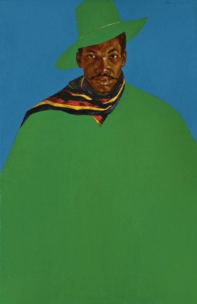
CRVI002758Barkley L. Hendricks - Sir Nelson. Solid!
1970
1970

CRVI000459Alan Aldridge - Hamlet, Revenge!
Cover for Michael Innes · Penguin Crime
Cover for Michael Innes · Penguin Crime
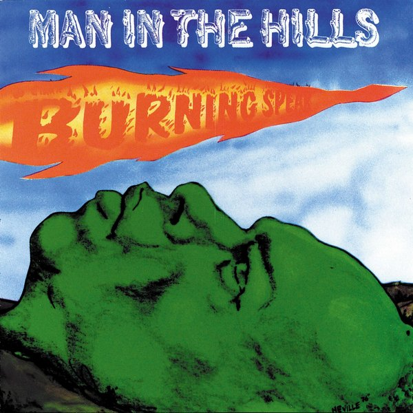
CRVI002899Neville Garrick - Burning Spear — Man In The Hills
1976
1976

CRVI000474Unknown - The How-To Issue
Bloomberg Businessweek, April 15 – April 21, 2013 · 2013
Bloomberg Businessweek, April 15 – April 21, 2013 · 2013

CRVI000416Alan Aldridge - Docken Dead
Cover for John Trench · Penguin Crime
Cover for John Trench · Penguin Crime

CRVI002965Keiichi Tanaami - untitled

CRVI001784Sadamasa Motonaga - Untitled
1993
1993

CRVI002921Rafic Farah - 30 Posters on Environment and Development (Eco 92)
1992
1992
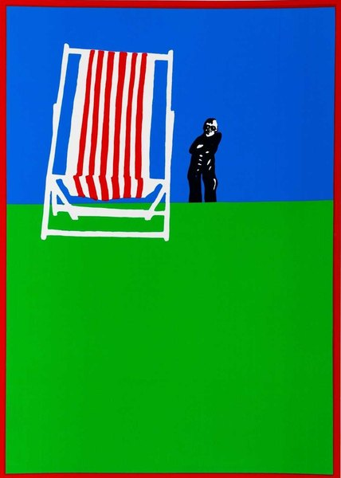
CRVI003212Uwe Lausen - Landschaft mit Liegestuhl
1968
1968
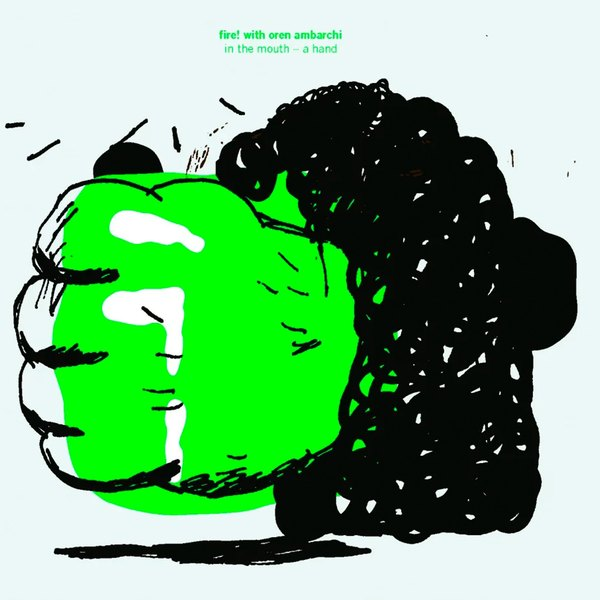
CRVI002998Kim Hiorthøy - Fire! With Oren Ambarchi — In The Mouth - A Hand
2012
2012
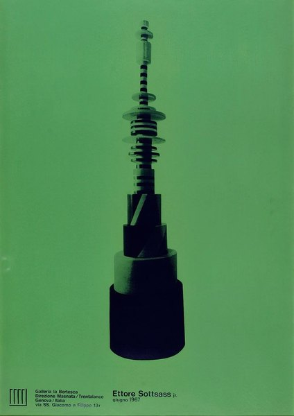
CRVI003221Ettore Sottsass - Goigno
Exhibition poster, Galleria La Bertesca · 1967
Exhibition poster, Galleria La Bertesca · 1967

CRVI002966Keiichi Tanaami - untitled

CRVI000871John Provencher - Will Larry Ellison Be the Face of the A.I. Bubble?
The New York Times Magazine, August 16, 2026 · 2026
The New York Times Magazine, August 16, 2026 · 2026

CRVI001179Wayne Shorter - Schizophrenia
Photograph by John Zoiner · Blue Note BST 84297 · 1969
Photograph by John Zoiner · Blue Note BST 84297 · 1969

CRVI000773Ivan Chermayeff - Two by Forsyth
Offset lithograph · 117 × 76 cm · 1984
Offset lithograph · 117 × 76 cm · 1984

CRVI000379Quintron - The Frog Tape
Designer unknown · Skin Graft · 2005
Designer unknown · Skin Graft · 2005

CRVI000021Negativland - A Big 10-8 Place
Designed by Ian Allen, Mark Hosler · Seeland · 1983
Designed by Ian Allen, Mark Hosler · Seeland · 1983

CRVI000042Tropic Of Cancer - Restless Idylls
Designed by Oliver Smith · 2013
Designed by Oliver Smith · 2013

CRVI001321Sérgio Mendes - The Swinger From Rio
Designed by Loring Eutemey, photograph by Hideoki · Atlantic 1434 · 1965
Designed by Loring Eutemey, photograph by Hideoki · Atlantic 1434 · 1965

CRVI002690Unattributed - Uncovering the Work of Takashi Kono
2021
2021

CRVI001338Luc Ferrari - Presque Rien No. 1 / Société II
Maker unidentified · Deutsche Grammophon
Maker unidentified · Deutsche Grammophon

CRVI001295Tommy Flanagan Trio - Overseas
Designed by Esmond Edwards · Prestige 7134 · 1958
Designed by Esmond Edwards · Prestige 7134 · 1958

CRVI000496Chris Nosenzo - Is Google Hurting Small Business?
Bloomberg Businessweek, August 10, 2020 · 2020
Bloomberg Businessweek, August 10, 2020 · 2020

CRVI002060Salman Toor - Bar scene
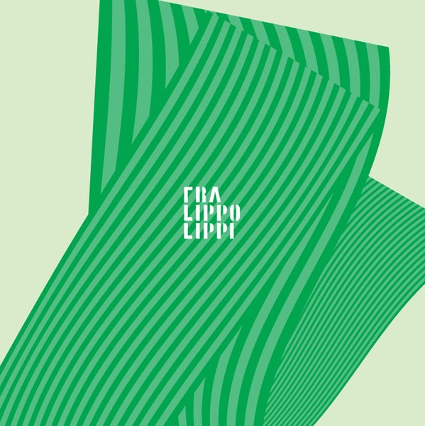
CRVI002890MVM (4) - Fra Lippo Lippi — The Colour Album
2011
2011

CRVI002470Pop Will Eat Itself - X Y & Zee

CRVI000249Bozena Jankowska - Dersu Uzala
Film Poster Designed By Bozena Jankowska · 1976 · 1976
Film Poster Designed By Bozena Jankowska · 1976 · 1976
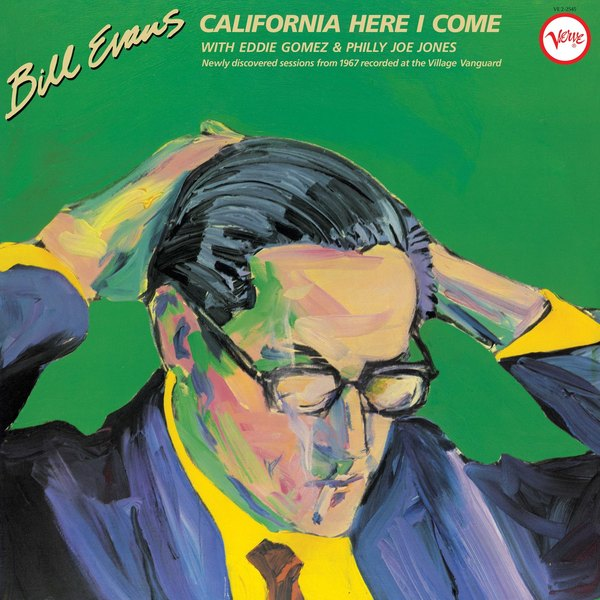
CRVI002896Tom Christopher - Bill Evans — California Here I Come
1982
1982

CRVI003041Franz Gertsch - Huaa…!
1969
1969
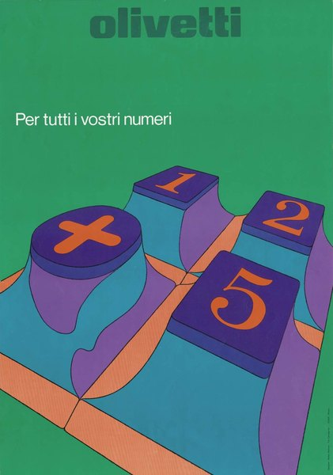
CRVI002846Walter Ballmer - Olivetti: Per tutti i vostri numeri
1971
1971

CRVI001111Rudy VanderLans - Emigre No. 5, Edizione Italo-Francese
Magazine cover · 43 × 29.1 cm, 30 pages · Emigre Inc., Berkeley · 1986
Magazine cover · 43 × 29.1 cm, 30 pages · Emigre Inc., Berkeley · 1986

CRVI002660Unattributed - セチュアンの善人 (The Good Person of Szechwan)

CRVI000817Seymour Chwast - The South, PPG #54
Push Pin Graphic #54 · 21.6 × 21.6 cm · 1969
Push Pin Graphic #54 · 21.6 × 21.6 cm · 1969

CRVI001906Robert Barry - Green panel with white points

CRVI000261Wiktor Gorka - The Great Escape
Film Poster Designed By Wiktor Gorka · 2018 · 2018
Film Poster Designed By Wiktor Gorka · 2018 · 2018

CRVI002265David Hockney - Garden

CRVI000094Various - Artificial Intelligence
Designer unknown · Warp Records · 1992
Designer unknown · Warp Records · 1992

CRVI001640Max Pechstein - The Red House
1911
1911

CRVI002830Maurizio Cattelan and Pierpaolo Ferrari - Toilet Paper, Issue 8
2013
2013

CRVI001261Elvin Jones - Midnight Walk
Designed by Marvin Israel, photograph by Lee Tanner · Atlantic 1485 · 1967
Designed by Marvin Israel, photograph by Lee Tanner · Atlantic 1485 · 1967

CRVI001790Barnett Newman - Dionysius
1949
1949

CRVI001320Jutta Hipp - Jutta Hipp With Zoot Sims
Designed by Reid Miles · Blue Note 1530 · 1956
Designed by Reid Miles · Blue Note 1530 · 1956

CRVI000557Somnath Bhatt - The Baristas' Rebellion
Bloomberg Businessweek, May 16, 2022 · 2022
Bloomberg Businessweek, May 16, 2022 · 2022

CRVI002715Eiko Ishioka - 野性時代 (Yasei Jidai), May 1977
1977
1977

CRVI000539Peter Herbert - Fortune 500
Fortune, June/July 2021 · 2021
Fortune, June/July 2021 · 2021

CRVI001759Josef Albers - Homage to the Square: Apparition
1959
1959
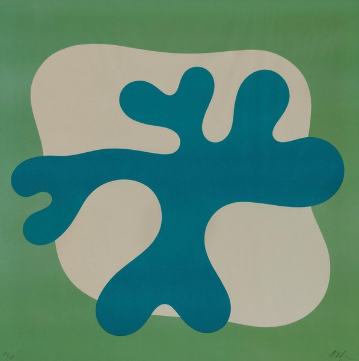
CRVI003239Jean Arp - Plakat Basel
Poster
Poster

CRVI002264David Hockney - Portrait of an Artist (Pool with Two Figures)
1972
1972

CRVI000238Troubleman - Time Out Of Mind
Designer unknown · Far Out Recordings · 2004
Designer unknown · Far Out Recordings · 2004

CRVI001086Kim Laughton - Untitled
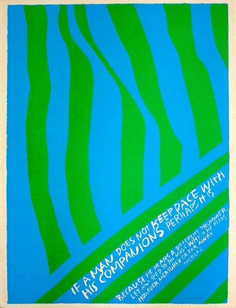
CRVI002927Corita Kent - if a man does not keep pace with his companions

CRVI001369Miles Davis - Blue Haze
Designed by Tom Hannan · Prestige 7054 · 1956
Designed by Tom Hannan · Prestige 7054 · 1956

CRVI002591Johnny Pacheco - Once Upon a Time / Había Una Vez
1970
1970

CRVI001957Kerry James Marshall - Vignette 13
2008
2008
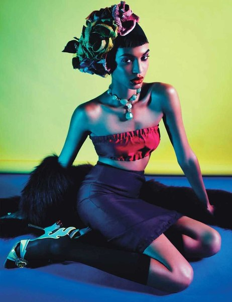
CRVI002743Unattributed - Untitled (model in blue and violet)

CRVI000089FUSE - Dimension Intrusion
Designer unknown · Plus 8 Records · 1993
Designer unknown · Plus 8 Records · 1993

CRVI002524Mingering Mike - Slow 'n' Easy

CRVI000741Robert Beatty - Untitled
Album cover · artist and title unrecorded · Trendland plate 12
Album cover · artist and title unrecorded · Trendland plate 12

CRVI002706Mitsuo Katsui - Untitled (spectrum rays)

CRVI002950Shigeo Fukuda - Shikaku Sakasu '85 (Vision Circus '85)
1985
1985
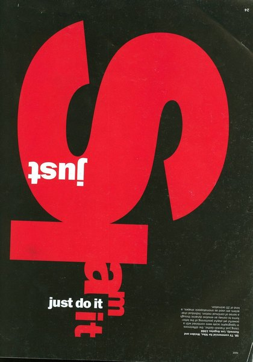
CRVI003243Neville Brody - Untitled

CRVI001540Jacob Lawrence - Dreams No. 2
1965
1965
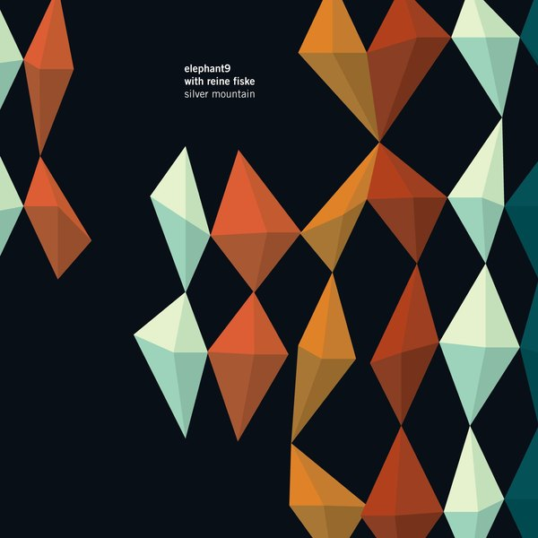
CRVI002877Kim Hiorthøy - Elephant9 With Reine Fiske — Silver Mountain
2015
2015
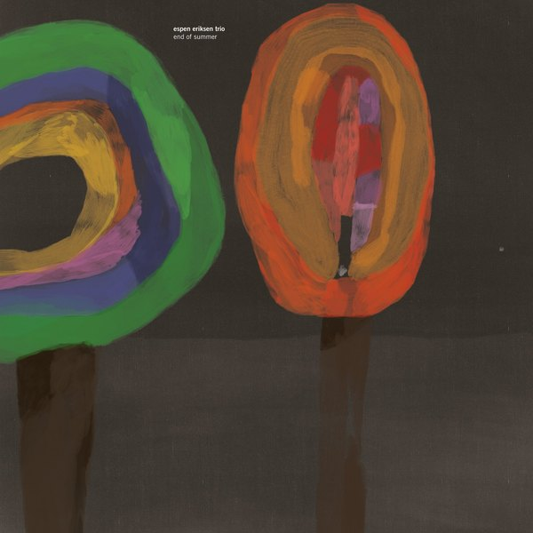
CRVI003019Kim Hiorthøy - Espen Eriksen Trio — End Of Summer
2020
2020

CRVI002532Mingering Mike - The Mingering Mike Show: Live from the Howard Theater
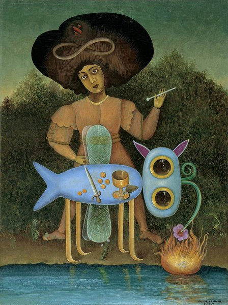
CRVI003186Victor Brauner - The Surrealist

CRVI002568Extreme - III Sides to Every Story
1992
1992
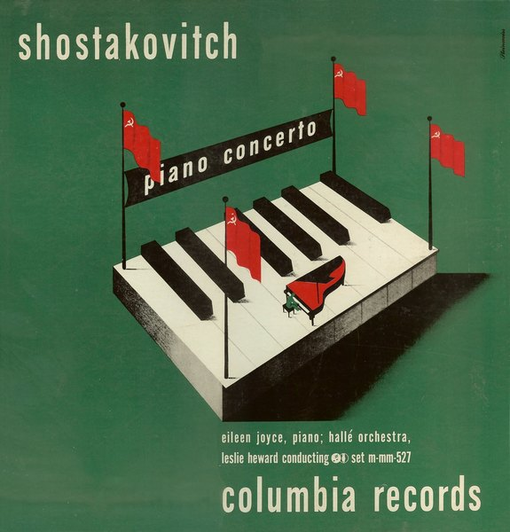
CRVI003164Alex Steinweiss - Shostakovich: Piano Concerto
Album cover · 1946
Album cover · 1946

CRVI002506Milton Glaser - The Lovin' Spoonful at Lincoln Center Philharmonic Hall
1968
1968

CRVI002798Rosmarie Tissi - Serenaden 92
1992
1992

CRVI002900Ron Contarsy - Eric B. & Rakim — Paid In Full
1987
1987

CRVI002582Ismael Rivera - Soy Feliz
1977
1977

CRVI002576Howlin' Wolf - Howlin' Wolf
1962
1962
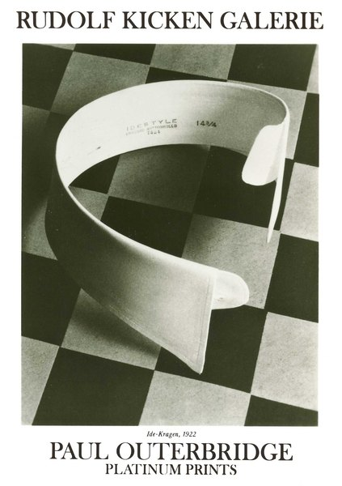
CRVI002816Paul Outerbridge - Ide Kragen (Ide Collar)
1922
1922
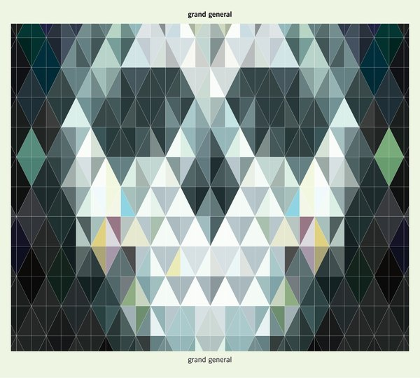
CRVI003003Kim Hiorthøy - Grand General — Grand General
2013
2013
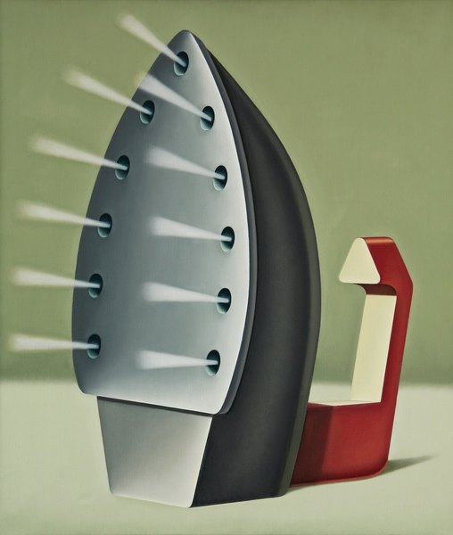
CRVI003098Konrad Klapheck - The Fanatic
1979
1979

CRVI001839Carlos Cruz-Diez - Chromointerférence
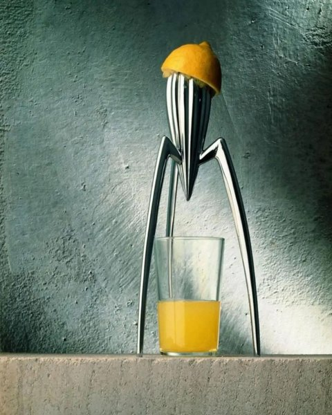
CRVI003208Philippe Starck - Juicy Salif
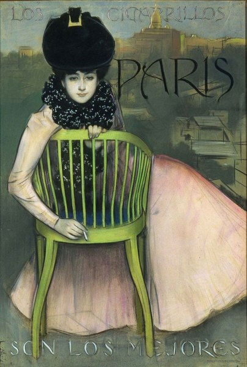
CRVI002847Ramon Casas - Cigarrillos París
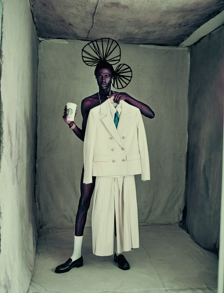
CRVI002747Paolo Roversi - Untitled, for System magazine issue 14

CRVI002693Kenji Itoh - 海抜1000mの涼風 ナショナル ルームクーラー (Cool Breeze at 1,000 Metres)
1965
1965
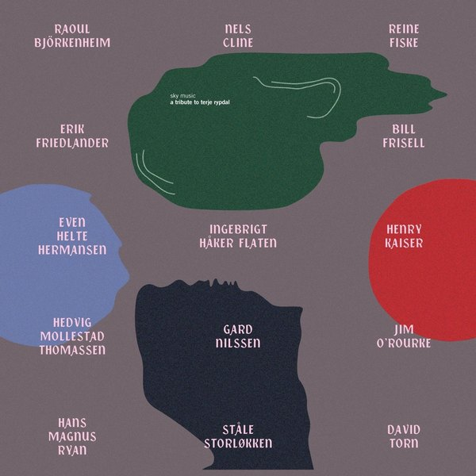
CRVI003015Kim Hiorthøy - Sky Music (2) — A Tribute To Terje Rypdal
2017
2017

CRVI002860Rosmarie Tissi - Serenaden 2002
2002
2002

CRVI000195Unknown - Desk Flip
Reaction GIF · Panda in an office · 43 frames, 5.2s loop
Reaction GIF · Panda in an office · 43 frames, 5.2s loop

CRVI002553Celia Cruz and Johnny Pacheco - Eternos
1978
1978
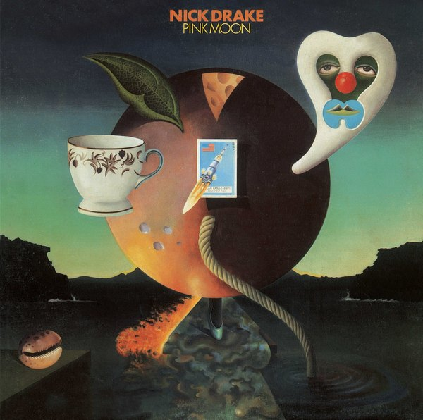
CRVI002907Michael Trevithick - Nick Drake — Pink Moon
1972
1972
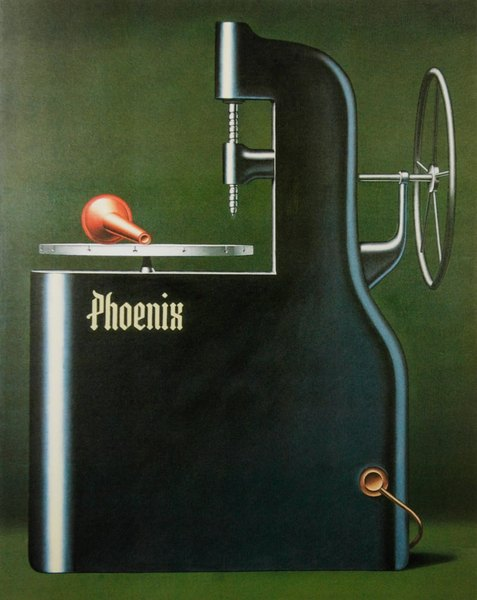
CRVI003099Konrad Klapheck - The Victim
1989
1989